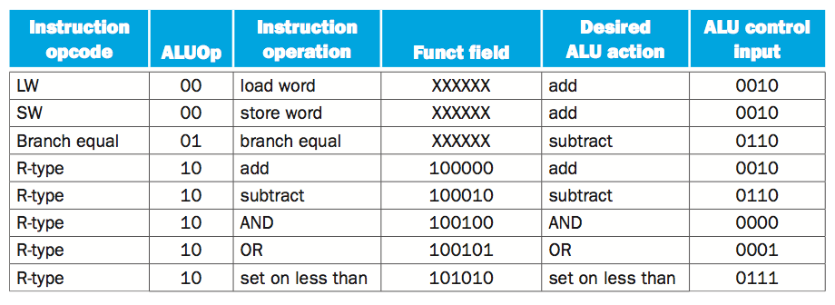

| Question | Delaware State University
Spring 2021 CSCI 230
Final Exam
1. Fill out blanks. In general, a machine cycle contains these stages:
____________, decode, ___________, and access memory/write back.
2. For the 16-bit number -1 with bit pattern 1111111111111111, after we
perform sign-extend to 32 bit, what number value will we get? ____________________. And what is its bit pattern? _______________________________________
3. When does the stack rise? When does the stack shrink?
4. By MIPS convention, $ sp is the stack point register holding the value of the ending memory position for the stack, and Sa0 is the register for storing the first parameter of a call to a function named X. De-compile the following assemble codes back to the C/C++/Java function X.
X: addi $sp, $sp, -8
sw $ra, 4($sp)
sw $a0, 0($sp)
slti $t0,$a0,1 # test for $a0 < 1, if not, $t0 gets 1, else $t0 gets 0
beq $t0,$zero,L1
addi $v0,$zero,0
addi $sp,$sp,8
jr $ra
L1: addi $a0,$a0,-1
jal X
lw $a0, 0($sp)
lw $ra, 4($sp)
addi $sp, $sp, 8
add $v0, $a0, $v0
jr $ra
5. Suppose register $ s3 holds value 6 initially. After executing the following assemble instruction
sll $ s3, $ s3, 2
the value in $ s3 will be ___________
6. xor means bitwise exclusive OR, and its truth table is
| a | b | a xor b | | 0 | 0 | 0 | | 1 | 0 | 1 | | 0 | 1 | 1 | | 1 | 1 | 0 |
slt means to set on less than, that is,
if 2nd argument < 3rd argument, set 1st argument to one, otherwise set 1st argument to zero.
Suppose initially both register $ t1 and $ t2 holds value 1. Trace the value of the other registers in the following assemble codes
addu $t0, $t1, $t2 # $t0 = __________
xor $t3, $t1, $t2 # the leading bit of $t3 = ________
slt $t3, $t3, $zero # $t3 = _____________
bne $t3, $zero,label_no_overflow # no overflow
xor $t3, $t0, $t1 # $t3 = __________
slt $t3, $t3, $zero # $t3 = __________
bne $t3, $zero, label_Overflow #
7.
Although we were taught by math teacher that half of positive number is still positive. Why does the silly loop "float x = 1.0; while (x >0) x/=2;" terminate?
8. If no pipeline technique is used, according the procedure presented in the zybooks, How many addition operations are needed for computing x*y for int variable x and y (here * is the multiplication operator)
9. Suppose register $ PC holds value 1000000, both register $ t0 and $ t1 holds value 1, what value will be in $ PC after executing the following instruction
beq $ t0 $ t1 10
10. (a)In the IEEE754 standard, for the single precision floating point number encoding format, the number of bits that are used to store exponent is ________
(b)Suppose the exponent is 3, the bit pattern of the
127-bias representation of the exponent is _________.
(c) The number of bits that are used to store mantissa (also known as significant) is __________
11.
By using the calculator in the Window accessories, one can get the bit pattern of the base-ten integer 16000000 (sixteen million), that is,
1111 0100 0010 0100 0000 0000.
The format of this number in terms of base-2, normalized scientific notation is
__________________
The exponent is ______________
The bit pattern of the exponent is _________________ (hint: using successive division)
The sign bit is _________________
The bits for mantissa are ________________________
Putting together, using IEEE754 standard for single precision floating point numbers, 16000000 has bitpattern __________________________________
Similarly, 16000001 has bitpattern ____________________________________________
Can we distinguish 16000000f from 16000001f ? ____________
12. We learnt that pointer is a sword of two edges. In C, (1) to declare p as a pointer type of variable for int, you write code______________, (2) to assign the value of the memory address currently pointed by p to another variable y, you write code _____________, (3) to point p to the address of another variable x, you write code ____________.
13.
For instruction sub $ t0 $ t1 $ t2, what control signals will be generated?
| RegDst | ___ | | Branch | ___ | | MemRead | ___ | | MemtoReg | ___ | | ALUOp | _____ | | MemWrite | ___ | | ALUSrc | ___ | | REgWrite | ___ |
You May need this table for the curent question

14. For instruction lw $ t0 $ t1 4, what control signals will be generated?
| RegDst | ___ | | Branch | ___ | | MemRead | ___ | | MemtoReg | ___ | | ALUOp | _____ | | MemWrite | ___ | | ALUSrc | ___ | | REgWrite | ___ |
15. PC stands for "Program counter", actually, the register holding the address of the instruction that is going to execute next. For most instructions, this updating
PC is just a side effect, occurs at the same time as the main operation (just as you do pre-registration for next semester), also simple, just incrementing by 4, but for the instructions with mnemonic _____, ______, ____ and ______, the sole purpose of instructions is just to update PC. Similar to these instructions, instruction with mnemonic jal , so-called jump and link, accomplishes two tasks at the same time, one of them is to update PC.
16. There are three formats of MIPS instructions. The R-format has ______ parts, I-format has _______ parts, and J-format has ______ parts.
17. | In general, why isn't "float" a good datatype for programming commercial applications such as banking, retail, utility systems? What two typical issues do we encounter when we use the 4-byte primitive data types such as int or float in numeric computations? Java is supposed to be a safety language, but does Java virtual machine take care of the issues automatically without bothering programmers? |
18. From the ArithmeticSimulator.java, we see that both multiplication and
division have 32 or 33 loops, both multiplication is 6 times fast than division.
How do you explain this difference? _________________________
19. Assume that (1) we can manage to divide a single cycle of executing an instruction into N many equal-time-length stages, (2) all the
instructions are independent of each other, and (3) it takes
T nanoseconds to execute a single average instruction in a single cycle, then it take _______ nanoseconds to execute an average instruction in the pipeline. Of course, things are not that easy, and in fact, the first two assumptions above are not true. In the effort of pipelining instruction executions, we will encounter
______________, ______________, ____________ hazards.
For example, instructions with mnemonic beq and neq can cause _____________ hazard.
Besides, dividing a single cycle equally into stages is also difficult to achieve. Engineers even design to use precious metal ___________ to resolve this issue.
20. By MIPS convention, what kind of values do the register $a0, $a1, $a2 and $a3 store?
|